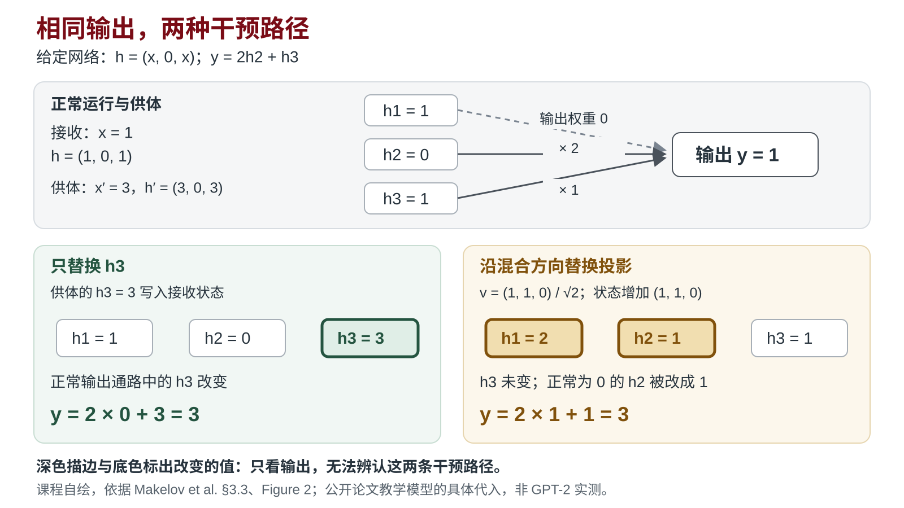

本讲章节导航
第 7 课｜机制假设、研究判断与实验设计¶
导读与学习目标¶
一个方法得到更高的分数，通常还不能告诉我们为什么。改善可能来自设想的机制，也可能来自输入差异、评价方式或另一个同时发生的改变。研究设计的关键工作，是让这些解释接受不同的检查，使新证据能够改变判断。
本课承接第6课的问题定义，学习从解释推出预测、选择有区分力的观察，并记录依据与下一步。实践时打开本人问题门材料中的研究问题、关键证据与必要前提，选择一处尚不能解释的现象或有待检查的方案依据。读完后，你应能为同一现象提出一个主解释和一个合理替代，说明什么观察有助于区分它们，以及什么结果仍不足以判断。过程研究可进一步提出可观察的机制路径；资料审计或理论项目则选择与自身问题相称的比较和反例，不必强造因果机制。
正文§一至§五的小例子是教学构造；§六用一篇公开论文展示研究者怎样为同一观察设计区分检查。前六课的术语优先掌握核心词一页纸中的 10 个。本课不新增正式提交，产出回到个人项目，供后续讲评与第9课判断门使用。
一、从一个观察走向多个解释¶
设想某个文档问答系统在更换索引后回答更准确。研究者认为，新索引改善了证据定位；另一个解释是新一轮问题较容易。两个解释都能产生“平均准确率提高”的观察，因此这个观察本身没有区分力。
首先写清真正发生了什么：哪组问题、哪个版本、什么指标、差异多大，以及记录来自哪里。然后提出能够产生该观察的过程。结果预测描述预期看到什么，机制假设描述改变通过什么中间过程影响结果。把“更准确”换成“理解更好”，仍然没有增加可检查的过程。
这个例子的证据定位解释可以写成：索引改变使检索结果更常包含回答所需的原文，因此答案更准确。它包含两个可检查环节——是否取得相关原文、取得原文后是否正确使用。问题难度解释则预测：即使沿用旧索引，换成较容易的问题也会提高分数。现在我们知道，应该检查什么信息，而不只是再要一份总分。
替代解释应有产生现象的合理路径。列出“有偏差”“不可靠”这类词不能形成可比较的解释；需要说明偏差发生在输入、生成、测量还是选择环节。不同解释也可能同时成立，研究者不必强行选出唯一原因。
二、从解释推出不同预测¶
预测要包含比较条件。单独写“检索结果更好”无法指导检查；写成“对同一批问题，固定回答模型和评价方式后，新索引取得必要原文的比例更高”，才说明了观察对象和比较对象。
在上述构造例中，保持问题集合相同，可以削弱“新问题更容易”造成的混杂。进一步检查检索结果，才能讨论改善是否经过证据定位环节。即使这两个观察都符合预期，仍可能存在其他变化，例如检索文本长度增加。需要根据实际实现核对，而不能把所有未想到的因素视为已经控制。
把两种解释放到同一个拟议检查中，预测差别才容易看见。在这个构造例中，先假定两种索引可在同一批问题上比较，回答模型和评价方式保持一致：
| 解释 | 对共同问题集的预测 | 需要定位的观察 |
|---|---|---|
| 新索引通过证据定位改善回答 | 新索引更常取得必要原文，相应回答也有改善 | 逐问题的必要原文取得情况及回答结果 |
| 原先差异纯由新一批问题较容易造成 | 换回共同问题集后，两种索引的系统性优势不再出现 | 同问题上的配对结果及差异的不确定性 |
这两项预测针对的是“证据定位改善”与“纯粹由问题难度造成”之间的分歧。它们仍可能遗漏其他解释；如果难度与索引都起作用，就需继续比较各自影响。预测表把下一步证据说清楚，不要求提前得到结果。
写预测时，尝试问：有没有一种可能结果，会让我降低对当前解释的信任？若任何结果都能被解释为“机制仍有效”，假设尚不足以指导验证。反过来，解释没有被这次观察反驳，也不等于已经成立。
Platt 的 Strong Inference 强调并列假设与能区分它们的实验。这里借用的是让证据改变解释的思路；具体比较仍要处理测量、操纵、资源和不确定性，不能把所有研究简化成一次决定性实验。来源见文末阅读入口。
三、选择有区分力且能执行的检查¶
区分力来自不同解释对结果的不同预期。若两个解释都预测某项指标上升，再精确地测这个指标也未必能区分它们。应该寻找中间过程、不同条件或合适的对照，使两者的预测发生分歧。
选择检查时，依次考虑四个问题：它针对哪项歧义，比较条件能否成立，测量是否可信，代价是否可承受。检查不一定是训练模型；可以是重算逐输入结果、核对原文、审查版本、运行一个固定测试，或构造一个针对命题条件的反例。
例如，系统调用成功率提高，可能来自过滤器正确拦截坏记录，也可能来自它把更多正常记录一起丢掉。只报告坏记录的拦截率无法区分质量改进与过度过滤，还需观察正常记录的保留情况。这里增加一个观察，是因为它回答具体歧义，而不是因为检查越多越好。
一次最小验证优先解决当前最影响决定的歧义。可执行的小检查，比一份无法在资源范围内完成的理想实验更有用；但缩小后要同步收窄结论。没有资源取得关键证据时，明确保持未决并记录所缺条件。
在上述问答例中，最小检查可先固定一组已有问题，核对两种索引对应的必要原文与回答结果。选它的理由是先削弱问题集合不同带来的歧义；只换一个更大的模型重测总分，会同时改变比较条件，难以回答当前问题。开始前写下比较对象、保持条件、要看的观察，以及不同结果将怎样影响解释。样本或执行条件不足时，这次检查用于确定后续证据需求。
完整的变量、采样、重复、配置与停止规格在第9课展开。本课先确定哪项观察值得取得，以及它怎样改变决定。
四、结果如何改变研究判断¶
结果到判断之间必须经过解释。观察到预期方向时，先确认测量与操纵是否按设计发生；若工具实际修改了另一个对象，结果不能用于检验原命题。测量失败首先是执行证据，不能直接作为机制反例。
以下是独立的教学构造：一种阅读流程试图减少摘要遗漏原文限定条件。评价时，把两种流程的输出转成相同格式，隐藏流程身份。若原来的评分差异消失，评价呈现方式成为值得重视的解释；但还需检查转换是否丢失内容、评审是否足够可靠。若差异仍存在，则削弱“仅由呈现提示造成”的解释，生成过程为何改善仍需进一步证据。
一种结果可以支持某条结果命题，同时暴露质量代价。例如限定遗漏减少而其他错误增加，整体是否值得采用需要另外判断。成本太高可以成为拒绝采用的理由，却不直接反驳已经观察到的质量变化。只在某类材料有效，则应限定范围，而不是把局部结果写成普遍成立或普遍失败。
| 判断状态 | 需要说明的理由 |
|---|---|
| 支持或削弱某解释 | 实际观察与哪项预测对应，其他解释还剩什么 |
| 仍不能区分 | 哪些解释仍预测同样结果，或精度、测量不足在哪里 |
| 暂停或改变方案 | 当前证据、成本和约束怎样影响下一步行动 |
回到问答构造例，检查之前可以先写下三种可能结果及处理方式。下表是拟议结果分支，没有对应真实实验数据。
| 可能观察 | 对解释的影响 | 下一步决定 |
|---|---|---|
| 共同问题上取得必要原文更多，回答也改善 | 削弱“纯由问题更容易造成”，与证据定位解释相符；仍需检查其他同时变化的因素 | 保留该解释，继续核查原文取得与回答改善的对应 |
| 必要原文取得更多，回答却未改善 | 检索环节可能改变，但“取得原文后能正确使用”这一环仍缺支持 | 检查生成环节与指标精度，调整或暂缓完整解释 |
| 差异不清楚，且样本不足或日志缺失 | 当前证据不足以区分解释 | 记录缺口，先补精度或日志，再决定是否修改解释 |
若观察与预测相反，且测量、操纵和精度足以支撑比较，应降低对该解释的信任；若这些条件未满足，先处理检查本身的缺口。这里的“仍不能判断”要指出缺哪项证据，才能指导下一步。
研究判断保留当时的理由，避免结果出现后反向改写初衷。记录可以是一段话：我们决定做什么，因为哪些证据，在什么范围内适用，还有什么未确认；该判断改变了哪个工件。没有必要为了字段齐全而重复制作文档。
五、让 AI 参与推理并留下可核对的执行¶
可以把已有问题、证据和约束交给 AI，让它提出竞争解释、展开预测，或者批评某个实验为什么没有区分力。研究者随后检查：解释是否真有不同路径，预测是否依赖未给定的事实，建议的工具能否取得所需证据。
给 Agent 的方法指引可以写成：先定位当前观察，再提出合理解释，比较预测，选择一项能改变判断的检查，最后说明证据与未决项。它帮助组织行动；具体对象编号（如注意力头序号）、实验结果或标准答案应来自任务输入，不能提前塞入通用规则。
若一条执行轨迹表明 Agent 只列解释而没有推出预测，可以试改指导顺序并在同一任务上检查行为。若初始执行已经完成必要检查，就不应把新增一句提醒记成收益。方法的改变要通过实际输入、动作和输出定位，而不是由总结文字推测。
记录本次使用的工具或模型、实际输入、执行轨迹、采用内容、依据和下一步。AI 的生成内容可以成为待检验的方案或行为研究数据；涉及外部事实与文献时，仍需回到来源核验。
六、论文案例：同一观察，两种机制¶
本节用一篇公开论文说明研究者怎样为同一个观察设计区分检查：Makelov、Lange、Nanda，Is This the Subspace You Are Looking for? An Interpretability Illusion for Subspace Activation Patching，arXiv:2311.17030v2。第3–5课的 MI 演示中出现过这篇论文；这里只看它的论证结构，不需要掌握其中的线性代数。
观察。activation patching 把模型在一个输入上的内部激活替换成另一个输入上的激活，看输出是否随之改变。沿一维方向 patch 时，替换的是该方向上的投影，与该方向正交的分量仍保留接收输入的原值。作者在 GPT-2 Small 的间接宾语识别（IOI）任务上，沿某个 MLP 层中的一个一维方向做 patch，模型行为像是句中名字的位置信息被翻转了（§4，Figure 3 标出了干预位置）。
两个解释。
- 解释 A：这个方向在模型的正常计算中表示了名字位置，patch 改写了这一特征。
- 解释 B：这个方向可以拆成两部分。一部分与该层输出因果断开，单独改它不影响下游；另一部分在正常输入上几乎不被使用，作者称为“休眠”。两部分一起被 patch 时，打开了一条平时不用的通路，同样能产生行为改变（§3.2）。
两个解释都预测“patch 后行为改变”，所以这个观察本身没有区分力，和§一的问答例是同一类处境。
一个能算清楚的网络。论文§3.3、Figure 2 给出一个教学网络：输入为数值 x，中间状态为 h=(x,0,x)，输出按 y=2h_2+h_3 计算。下面代入具体数值说明它的计算，属于公开论文教学模型，不是 GPT-2 实测。
在这个给定计算图中，h_1 随输入变化，但输出不读取它；h_2 能影响输出，却在正常输入上恒为零；h_3 将输入传到输出。以输入 1 的状态作为接收对象，以输入 3 的状态作为供体：
| 状态或操作 | 中间状态 (h_1,h_2,h_3) |
输出 y=2h_2+h_3 |
|---|---|---|
接收输入正常运行：x=1 |
(1,0,1) |
1 |
供体输入正常运行：x'=3 |
(3,0,3) |
3 |
只用供体值替换接收状态的 h_3 |
(1,0,3) |
3 |
沿混合方向 v=(1,1,0)/√2 替换投影 |
(2,1,1) |
3 |
最后一行并非分别复制 h_1 和 h_2。两个正常状态沿 v 的投影相差 √2，把接收状态沿这个方向增加 √2v=(1,1,0)，便得到 (2,1,1)。它的 h_3 仍为 1，输出却因 h_2 被改成 1 而变为 3。

课程自绘，依据 Makelov et al. §3.3、Figure 2 改写。深色描边与底色标出改变的值；两种干预均得到输出 3，混合方向替换却使正常为零的分量产生贡献。数值为论文教学模型的具体代入，非 GPT-2 实测。
只看输出变为 3，就无法辨认这两条路径。回查中间状态，才看见第二种干预使原本休眠的分量产生了作用。可以据此自查：哪项状态变化支持休眠通路解释？若只有输出记录，还缺什么计算过程证据？
这个小网络让路径差异直接可见。在真实 MLP 中，作者另按输出矩阵将候选方向分解为因果断开部分和其余部分，再进行下述检查；图中的坐标 h_2 不直接等于实际模型分解出的方向。
区分检查。作者在§3.4给出两项检查。下表是按本例重建的预期，用来说明检查为什么有区分力，不是原文的判定规则：
| 检查 | 解释 A 的预测 | 解释 B 的预测 |
|---|---|---|
| 去掉因果断开的部分，只沿剩下的部分 patch | 效果与原 patch 相近 | 效果明显减弱 |
| 比较样本在两个分量方向上投影的离散程度（Figure 5） | 剩下的部分在正常输入上随名字位置变化 | 剩下的部分在正常输入上变化很小，即“休眠” |
“效果相近”只削弱这一种特定的错觉解释，不能单独证明方向忠实于模型的计算；忠实性还需要其他证据。
结果与判断。在这个 MLP 方向上，作者报告 patch 后该层沿因果相关方向的贡献出现了与 patch 前相反的强烈区分（§4.4，Figure 4），据此判断 patch 激活了平时休眠的中介，把模型推离正常分布，支持解释 B。§5 在残差流中研究另一个方向。残差流里没有一个对所有下游组件都因果断开的子空间，作者改用三个 Name Mover 头读取的子空间作为代理来分解；在这一代理分解下，去掉对应部分没有明显削弱 patch 效果。再结合方向相似性、位置区分能力等其他检查，作者认为该方向不依赖本文所述的错觉机制（§5.1）。同一类检查在一个方向上削弱了“忠实表示”，在另一个方向上削弱了“错觉”，但后者的结论依赖代理分解和多项证据的组合。
适用边界。这篇论文说明特定条件下 patching 的成功可能来自错觉，不能概括为“patching 全部无效”。它也给出了成功案例。读的时候注意作者怎样先写出两个解释各自的预测，再选择检查；这一步和你在本人项目中要做的一样。
七、共同诊断与本人迁移¶
先在入口写下本人当前最难确定的一点。方法讲解后，按学生任务中的问题独立写出初判，再与同学比较，并对照揭示的实际做法。自学时可用§六的论文案例回答两个问题：作者的检查还不能排除什么？如果由你继续，下一项检查是什么？
回到本人项目时，选择当前最重要的一项解释分歧。写出主解释和一个合理替代各自的预测，选一项可执行检查，并说明哪些结果会改变判断、哪些仍不足以判断。请 AI 提出一次有针对性的质疑，保留你采纳、修改或拒绝它的依据。形成预测后，实际核对一处原文、已有日志、指标定义或对照输入，检查设计是否有依据、能否执行，再回写选择理由。拟议验证与已运行结果分别标记。
课上完成预测表：主解释、一个合理替代和同一检查下各自的预测。第8课前在课后补全中完成其余部分：选一项最小检查，实际核对一处设计依据，写出选择理由（即一条研究判断），保存 AI 使用记录，并写明下一项可取得的证据；同时从问题门材料带入当前最大风险。保留最薄弱的区分证据，供第8课讲评与质询使用；第9课补完整规格。按需构造练习见补充案例。
八、术语与自查¶
机制假设提出结果经过什么过程发生；区分观察让不同解释产生不同预期；混杂意味着还有其他同时变化的因素可以解释结果；研究判断把证据和约束落实为行动。
读完后尝试不用案例编号解释：为什么两组分数不足以确认机制？为什么评价失败不等于假设被反驳？为什么范围限制和采用成本要与结果命题分别判断？回答应当包含比较条件和推理，而不只是术语。
九、延伸阅读与课程材料¶
课程内材料：
正式书目（见 reading-list.md 第 7 课）：
- （指定阅读）Makelov, A., Lange, G., & Nanda, N. Is This the Subspace You Are Looking for? An Interpretability Illusion for Subspace Activation Patching. arXiv:2311.17030v2。读摘要与§3.4；用途见§六。
- Box, G. E. P., Hunter, J. S., & Hunter, W. G. Statistics for Experimenters: Design, Innovation, and Discovery, 2nd ed. Wiley, 2005. ISBN: 978-0-471-71813-0. 选读 Chapter 1 "Catalyzing the Generation of Knowledge" 与 §3.4 "Comparison, Replication, Randomization, and Blocking in Simple Experiments"。出版社配套页。用途：把实验理解为模型—推论—数据—修正的迭代学习过程。
- （按需）Platt, J. R. "Strong Inference." Science 146(3642): 347–353 (1964). DOI: 10.1126/science.146.3642.347。本课只读替代假设、关键实验与结果区分力部分。用途：为主假设设计竞争解释和反驳条件。
- NIST/SEMATECH. e-Handbook of Statistical Methods: Process Improvement—Experimental Design. 在线。选读 objectives、factors、responses、randomization、replication 与 blocking。用途：检查变量、对照、测量和混杂因素。
课外预算与下次输入¶
课外总投入最多 60 分钟：指定阅读 15 分钟，准备 10 分钟，项目补全 35 分钟。阅读范围：Makelov et al. 的摘要与§3.4（约 1 页），对照本讲义§六的预测表，找出作者区分两个解释的那项检查。Platt Strong Inference 改为按需阅读。
项目补全（第8课前）：选一项最小检查，核对一处设计依据，写出选择理由，保存 AI 使用记录，写明下一项证据，并带入问题门材料中的当前最大风险。
安装、下载与排障计入总预算。设备或网络故障时，用已保存的材料和日志完成可做的检查；未执行部分标明待补，不能以回放替代实际运行。本课回写累计项目，不新增正式提交。